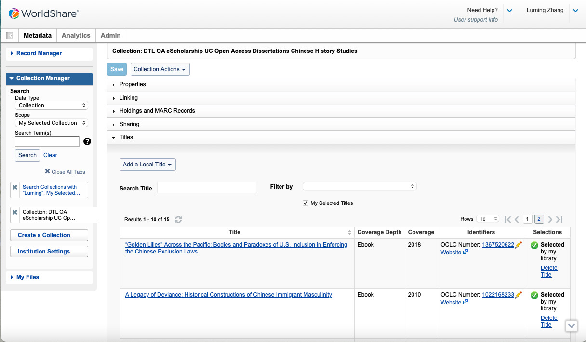
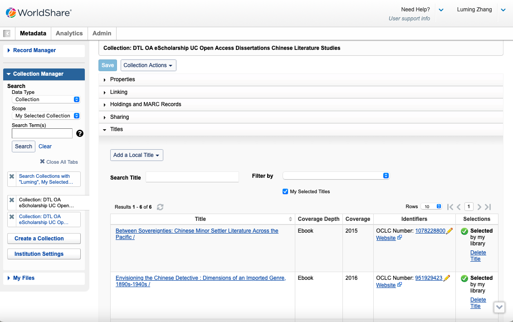
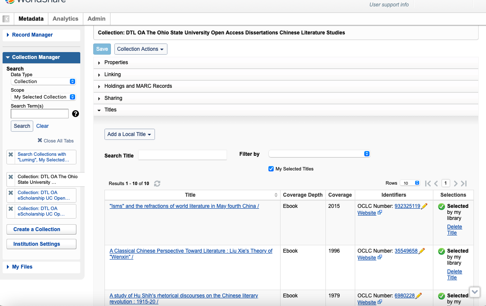
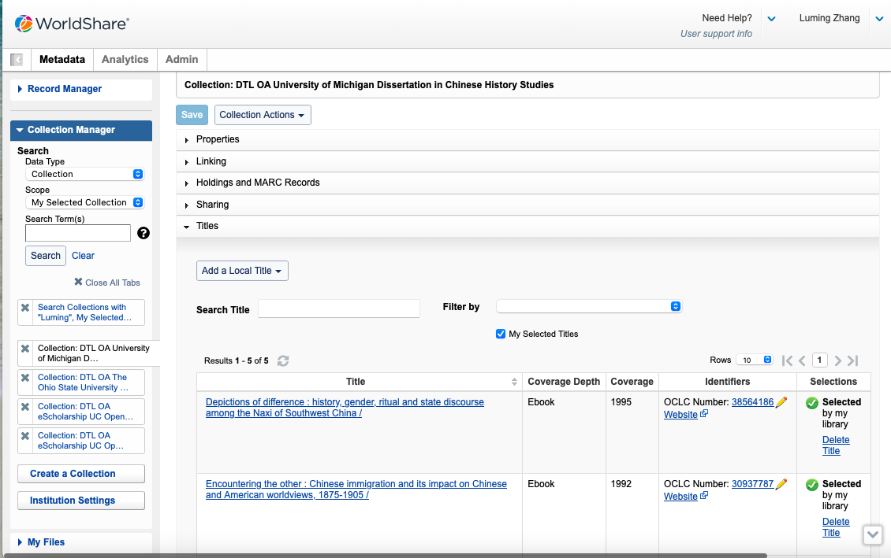
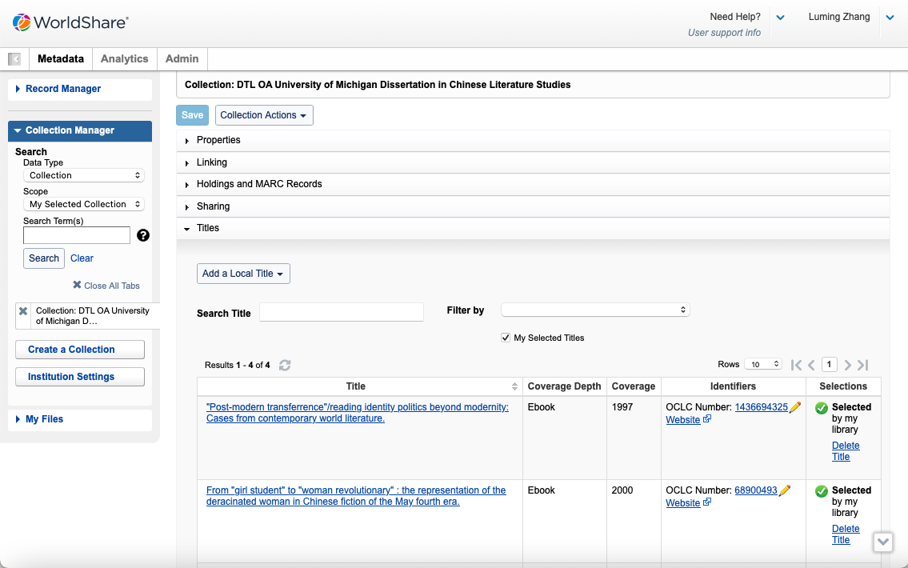

Collections Created
DTL OA eScholarship UC Open Access Dissertations Chinese History Studies
Description: This collection, created on June 30, 2024, focuses on open access dissertations related to Chinese history studies from the University of California eScholarship.
Download Collection 1 CSVDTL OA eScholarship UC Open Access Dissertations Chinese Literature Studies
Description: This collection, also established on June 30, 2024, contains open access dissertations related to Chinese literature studies from the University of California eScholarship.
Download Collection 2 CSVDTL OA The Ohio State University Open Access Dissertations Chinese Literature Studies
Description: This collection, created on August 12, 2024, contains open access dissertations related to Chinese literature studies from The Ohio State University.
Download Collection 3 CSVDTL OA University of Michigan Dissertation in Chinese History Studies
Description: This collection, created on August 12, 2024, focuses on open access dissertations related to Chinese history studies from the University of Michigan.
Download Collection 4 CSVDTL OA University of Michigan Dissertation in Chinese Literature Studies
Description: This collection, created on August 8, 2024, focuses on open access dissertations related to Chinese literature studies from the University of Michigan.
Download Collection 5 CSV